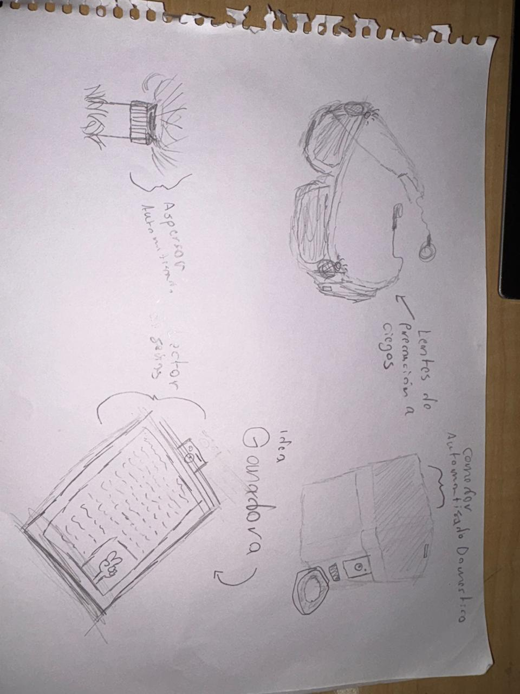
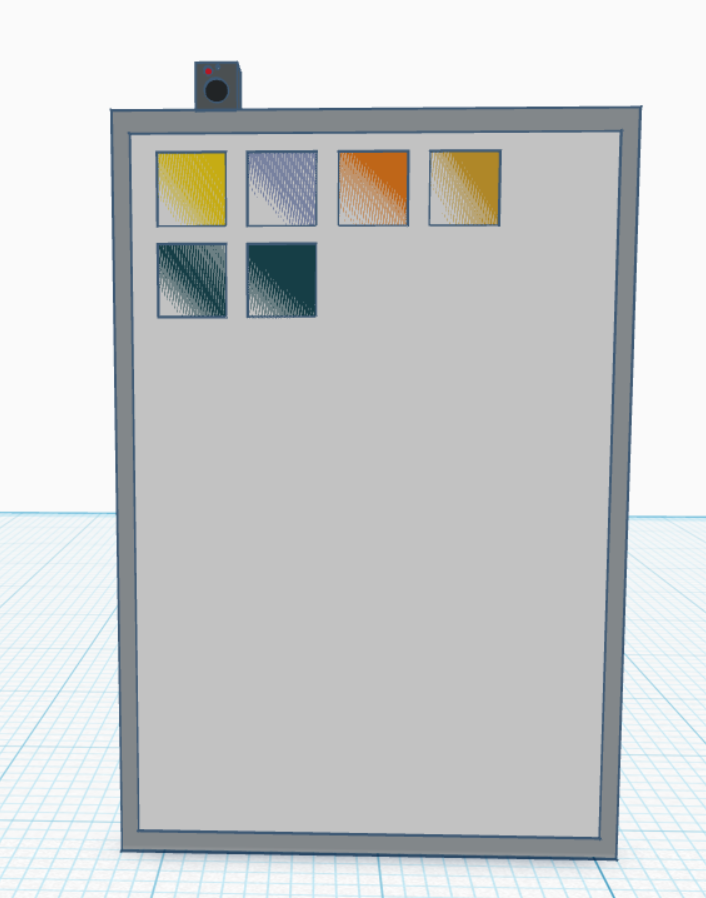

HandsOn
Sign Language Detector — Proyecto de Robótica e Inclusión
SESIÓN 01 Lluvia de Ideas y Filtrado Metodológico
Durante la primera sesión de trabajo, el equipo analizó diversas problemáticas cotidianas que podían ser abordadas mediante soluciones tecnológicas, mecatrónicas y de software. Se realizó una sesión intensiva de lluvia de ideas guiada por criterios de impacto social, factibilidad técnica y originalidad.
Propuestas Evaluadas:
- Idea A - Cinturón Háptico: Dispositivo portable de asistencia de navegación mediante sensores de ultrasonido y motores de vibración.
- Idea B - Riego Automatizado: Sistema de control higrométrico con microcontrolador para optimización de agua en cultivos domésticos.
- Idea C (Ganadora) - Lector / Traductor de Señas: Sistema embebido inteligente capaz de reconocer patrones gestuales y convertirlos a texto/voz en tiempo real.
- Idea D - Comedero Inteligente: Dispensador programable automatizado con báscula e identificación para mascotas.
Metodología de Selección:
Mediante una matriz de evaluación con votación ponderada, la Idea C resultó seleccionada debido a su alto impacto inclusivo y el desafío tecnológico de integración entre visión computacional, hardware embebido e interfaz de usuario.
Figura 1.1: Diagrama de flujo detallado del proceso de selección y ciclo de desarrollo del proyecto.
SESIÓN 02 Identidad Corporativa y Modelo de Negocio
Con la idea seleccionada, la segunda sesión se centró en la estructuración de la identidad de la empresa y la validación del modelo de negocio de impacto social. Se definió la propuesta de valor para asegurar que el producto no solo fuera funcional, sino viable comercial e institucionalmente.
Proceso de Naming:
- SignSense
- HandsOn [Elegido]: Representa la acción directa de las manos y el enfoque práctico del dispositivo.
- VozEnSeñas
- Signo Tech
- Gestura
Modelo Canvas y Clientes Objetivo:
- Usuarios Directos: Personas con discapacidad auditiva y del habla que buscan mayor autonomía, facilidad de comunicación, acceso educativo y social.
- Clientes Institucionales: Hospitales, entidades bancarias, instituciones educativas y oficinas de atención al cliente públicas que requieren cumplir normativas de inclusión y accesibilidad universal.
- Propuesta de Valor: Dispositivo ligero ("HandsOn Device") capaz de procesar señas a texto/voz con facilidad de uso, actualización continua de vocabulario gestual y bajo costo.
Figura 2.1: Lienzo conceptual de negocio e identidad visual de la marca HandsOn.
SESIÓN 03 Bocetos Conceptuales y Arquitectura Física
Se plasmaron los primeros esquemas del chasis del dispositivo, ubicación de sensores, módulos de cámara y ergonomía general para la experiencia del usuario final.
Aspectos Clave del Boceto:
- Integración de pantalla frontal para lectura inmediata de texto traducido.
- Sensor/Cámara superior en ángulo óptico para captura efectiva de señas gestuales.
- Diseño compacto portátil estilo tablet/consola interactiva para facilitar su traslado.

Figura 3.1: Bocetos preliminares de exploración de forma e integración de hardware.
SESIÓN 04 Prototipado 3D y Simulación en Tinkercad
En esta etapa se desarrolló la primera versión digital en 3D del chasis contenedor mediante Tinkercad. Se definieron las dimensiones del panel principal y la posición exacta de los componentes de procesamiento e interfaz.
Especificaciones del Prototipo Digital:
- Módulo Superior: Carcasa para la cámara de captura gestual y LED indicador de estado de lectura.
- Panel Frontal: Marco protector para pantalla LCD/OLED con matriz de botones de configuración y selección rápida.
- Ajuste Estructural: Carcasa posterior con ventilación para el microcontrolador/SoC procesador.

Figura 4.1: Modelo CAD tridimensional del prototipo del Lector HandsOn diseñado en Tinkercad.